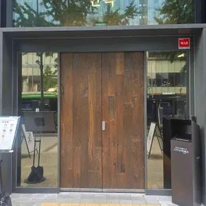
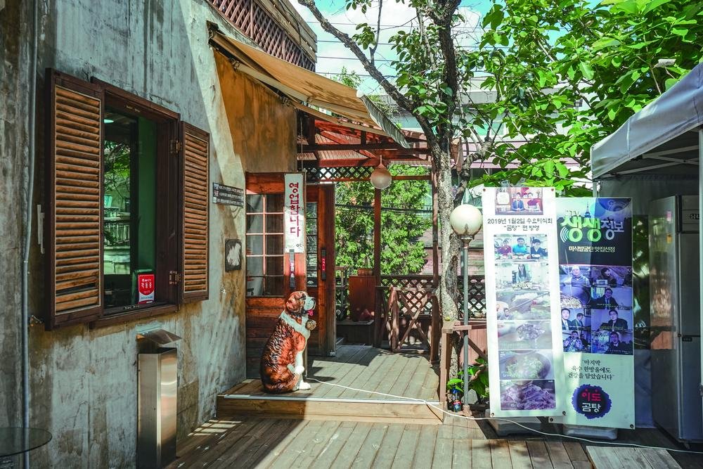
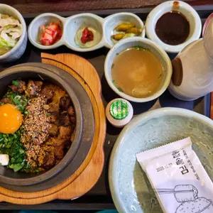

합계는 음식 주문 예시임. 음료·추가 음식은 별도. 빨간 글씨는 미확인 또는 상충하는 정보.
01 · 기본 선택 · 진한 돼지국밥
안목 강남역삼 87
맛 근거 34/40 · 3인 식사 18/20 · 위치/가격 18/20 · 운영 확신 17/20

역삼·선릉 중간 위치, 1인 1국밥에 냉제육을 나눠 먹기 쉬움. 진하고 매끈한 국물에 대한 구체적인 호평이 반복됨.
3인 주문 예시
돼지국밥 13,000원 × 3 = 39,000원
냉제육 17,000원 추가 시 56,000원
냉제육은 계절 메뉴 표기, 10/17 판매 미확인
토요일 점심
10:00–22:00 · 점심 브레이크 표시 없음
전통 부산식 돼지 향보다 돈코츠처럼 진한 국물이라는 평도 있음. 담백한 국물 선호면 이도곰탕이 나음.
언주로 520, 1층
0507-1430-0837 · 두 역 중간 · 언주로 쪽
근거 1 근거 2
02 · 오래 이야기할 식사 · 화덕피자
지아니스나폴리 역삼 본점 85
맛 근거 35/40 · 3인 식사 19/20 · 위치/가격 15/20 · 운영 확신 16/20
화덕피자와 화덕에 다시 구운 새우 크림 파스타가 확실한 주문 포인트. 국밥보다 여러 접시를 공유하며 이야기하기 좋음.
3인 주문 예시
마르게리타 디 부팔라 23,000원
감베리 크레마 19,500원 × 2
합계 62,000원 · 음료/추가 메뉴 별도
토요일 점심
11:30–15:00 · 점심 주문마감 14:00
브레이크 15:00–17:00
대기 가능성이 크고 지하 매장. 3개 메뉴는 주문 예시이며 세 명에게 충분한 양을 보장하지 않음.
논현로94길 15, 지하 1층
02-566-0501 · 역삼역 쪽 · 북쪽 골목
근거 1 근거 2
03 · 담백한 국물 · 빠른 점심
이도곰탕 본점 82
맛 근거 33/40 · 3인 식사 16/20 · 위치/가격 16/20 · 운영 확신 17/20

맑고 깊은 소고기 국물과 김치에 대한 독립 방문평이 반복됨. 강남 관광 안내도 빠른 서빙을 장점으로 소개.
3인 주문 예시
곰탕 14,000원 × 3 = 42,000원
특곰탕 17,000원 × 3 = 51,000원
토요일 점심
토요일 10:00–21:00
점심 브레이크 표시 없음
깔끔하고 빠른 한 끼 성격. 길게 앉아 수다 떨 식사로는 2위가 더 어울림. 매장 전화는 관광 안내 기준.
논현로94길 29-5
02-569-0524 · 역삼역 쪽 · 북쪽 골목
근거 1 근거 2
04 · 가볍고 개성 있는 선택 · 버거
미트앤번버거샵 강남점 76
맛 근거 31/40 · 3인 식사 15/20 · 위치/가격 16/20 · 운영 확신 14/20
구운 번, 육즙 있는 패티와 감자튀김에 대한 구체적인 방문평이 있음. 가장 저렴한 기본 주문 예시.
3인 주문 예시
미트앤번슈프림 10,800원 × 3
= 32,400원 · 버거만 기준
감자튀김/음료 최신 가격 미확인
토요일 점심
토요일 11:00부터 점심 운영 확인
종료시간 상충: 네이버 15:30 / 구글 16:00
작은 매장. 세 명이 함께 앉는 자리와 당일 대기는 미확인. 정오 방문 기준으로만 추천하며 늦은 점심은 피하는 편이 안전.
테헤란로52길 16, 상가 10호
0507-1302-1667 · 두 역 중간 · 테헤란로 남쪽
근거 1 근거 2
05 · 메뉴 선택 폭 · 넓은 식사 공간
솥내음 강남 역삼 선릉역점 73
맛 근거 26/40 · 3인 식사 18/20 · 위치/가격 13/20 · 운영 확신 16/20
스테이크·연어·장어 등 각자 다른 메뉴를 고를 수 있고 넓은 공간이 세 명 점심에 실용적.
3인 주문 예시
스테이크 솥밥 19,900원 × 3
= 59,700원
연어장 솥밥 16,900원 × 3 = 50,700원
토요일 점심
10:00–21:30 · 브레이크 15:00–16:30
10월 영업시간 변경 공지 반영
체험단·리뷰 이벤트성 글이 많아 맛 확신 점수를 낮춤. 공간과 메뉴 폭이 우선일 때 고르는 대안.
선릉로93길 8, 2층
0507-1381-8218 · 선릉역 서쪽 · 북쪽 골목
근거 1
06 · 역삼 쪽 솥밥 대안
솔솥 역삼점 70
맛 근거 27/40 · 3인 식사 16/20 · 위치/가격 13/20 · 운영 확신 14/20

도미관자·스테이크 솥밥과 누룽지 마무리. 네 명 테이블이 있다는 방문평이 있어 버거보다 모임 식사에 편한 대안.
3인 주문 예시
스테이크/도미관자 17,000–17,900원
자료 간 가격 차이 있음
3인 51,000–53,700원 참고
토요일 점심
11:00–15:00 점심 운영 교차 확인
브레이크 15:00–17:00
가격과 양에 대한 평이 엇갈림. 최신 정확한 가격과 10/17 세 명 자리는 미확인. 저녁 종료시간도 자료 상충이라 점심만 표기.
논현로94길 23, 1층 101·102호
0507-1415-8865 · 역삼역 쪽 · 북쪽 골목
근거 1 근거 2 근거 3
공개 별점의 단순 합산이 아님. 맛에 대한 독립적·구체적 근거 40점, 세 명 식사/공유/공간 20점, 요청 위치와 전체 주문 가격 20점, 영업·메뉴 자료의 최신성과 일치도 20점으로 비교함. 성별로 취향이나 식사량을 추정하지 않음.
앞의 세 곳을 우선 추천. 4위는 버거가 먹고 싶을 때, 5·6위는 각자 솥밥을 고르고 싶을 때의 조건부 대안임. 예산·선호 음식·알레르기·정확한 점심 시간은 주어지지 않아 임의로 제한하지 않았음.
토요일에 빠진 유명 후보
대우부대찌개와 카츠오도는 토요일 휴무 자료가 있어 제외함. 농민백암순대 본점·마담밍·진대감 선릉은 선릉역 동쪽, 능라도 강남은 삼성역 방향으로 요청한 두 역 사이에서 벗어남.
봉우리는 역삼 쪽 위치는 맞지만 주말은 평일 점심 가격이 아닌 코스 조건을 봐야 함. 예산 없는 가벼운 점심의 기본 후보로는 우선순위를 낮춤.
실제로 달라진 운영 정보
안목: 오래된 한차오 안내보다 현재 네이버의 매일 10:00–22:00를 우선함. 부산 본점의 미쉐린 경력을 이 서울 지점의 수상으로 표시하지 않았음.
솥내음: 네이버 매장 10월 변경 공지의 10:00–21:30, 브레이크 15:00–16:30 반영. 예전 10:30–21:00 정보는 쓰지 않음.
미트앤번: 네이버와 구글의 토요일 종료시간이 다름. 점심 시작은 일치하지만 늦은 점심에는 추천 확신이 낮음.
지도와 실제 매장 전화번호를 연결함. 전화 버튼은 문의용이며 예약 가능 보장이 아님. 지아니스나폴리 캐치테이블 링크는 매장·메뉴/대기 확인용임. 온라인 사전예약 또는 10/17 세 명 예약 가능 상태는 확인하지 못했음. 자동 예약은 하지 않음.
기본 식사 전략: 진한 국물이 괜찮으면 안목, 공유하면서 오래 먹고 싶으면 지아니스나폴리. 돼지 향이나 진한 국물 취향이 갈리면 이도곰탕 쪽이 더 안전한 대안.
42개 공개 검색을 바탕으로 매장 메뉴, 네이버/구글 운영시간, 강남 관광 안내, 다이닝코드·뽈레의 구체적인 방문평을 교차 확인. 체험단·광고성 글은 맛 확신의 주근거에서 제외. 방문한 페이지와 실패/빈 화면인 페이지도 아래에 포함함. 해당 링크를 넣었다고 모든 내용이 검증되었다는 뜻은 아님. 메뉴·시간 근거는 각 후보 카드 및 위 설명이 우선.
사진은 다이닝코드 방문자 사진 및 Visit Gangnam의 자료사진. 과거 사진이며 현재 메뉴나 주문 예시의 정확한 사진이라는 뜻은 아님. 원본 출처 URL도 아래 포함.